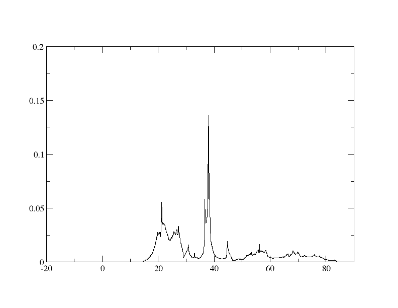
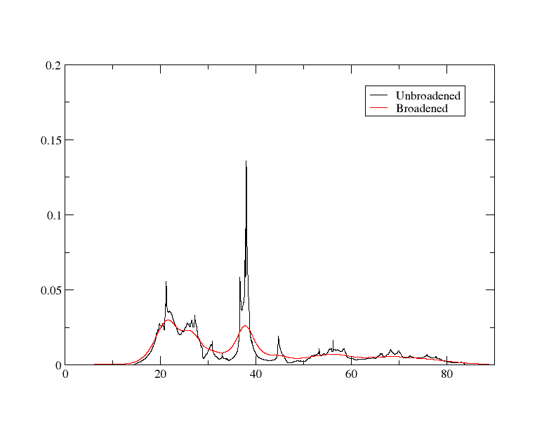
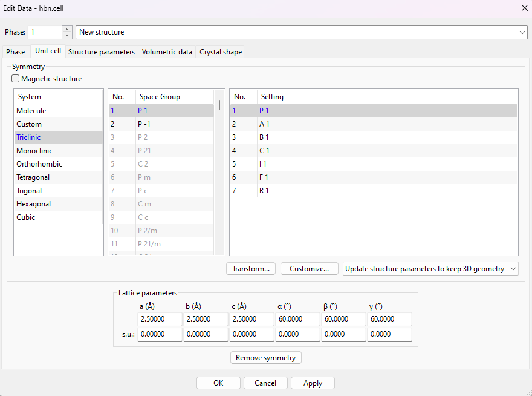
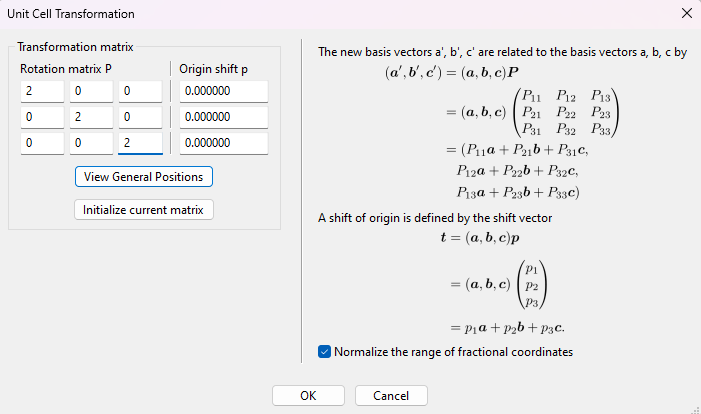
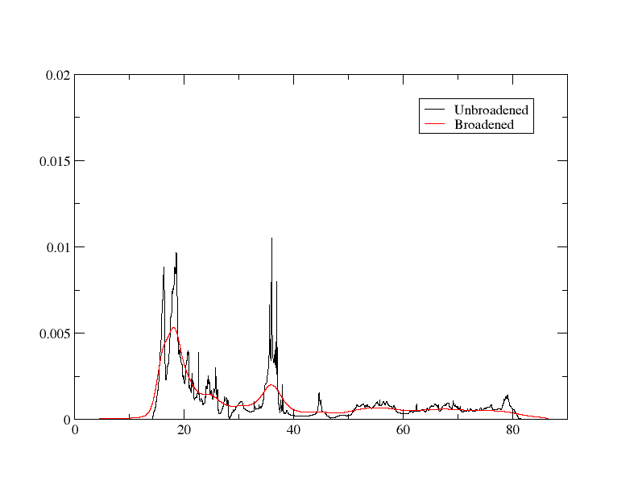
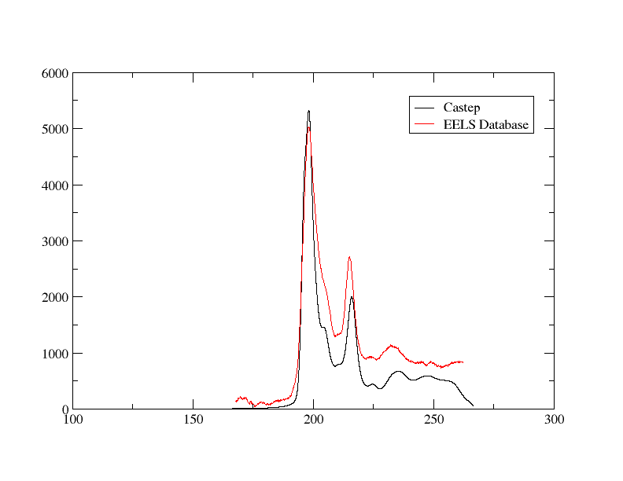

Coreloss
Calculation of core-loss spectra for cBN
Core-loss calculations effectively calculate the probability of an electron being excited from a core state into the conduction band. This is useful for calculating the core-loss (ionisation edge) peaks - by performing these calculations, you can get a simulation of what you would see in an experimental EELS or XANES spectrum.
In this tutorial, we will look at the results of such a calculation on cubic boron nitride (cBN), looking at the boron K-edge. In the end, we will compare it to the spectrum in the EELS Database.
We will use the cell file
cbn.cell
%block lattice_abc
2.5 2.5 2.5
60 60 60
%endblock lattice_abc
%block positions_frac
B 0.00 0.00 0.00
N 0.25 0.25 0.25
%endblock positions_frac
kpoints_mp_grid 10 10 10
spectral_kpoint_mp_grid 12 12 12
with the param file
cbn.param
Note that a larger number of spectral k-point than standard one is usually required, and, to test if it is converged, you'd have to look at the whole spectrum (rather than examining a single value/result as in some other convergence tests). It is also important that you do not have SYMMETRY_GENERATE on for coreloss calculations.
After running Castep, run Optados with the Optados input file
cbn.odi
TASK : core
DOS_SPACING : 0.01
BROADENING : adaptive # Default
ADAPTIVE_SMEARING : 0.4 # Default
CORE_GEOM : polycrystalline # Default
CORE_LAI_BROADENING : false # Default true
LAI_GAUSSIAN_WIDTH : 1.0
The line TASK : core is what determines that a core-loss calculation will be performed. CORE_GEOM : polycrystalline could also be replaced by core_geom : polarized, in which case you'd also have to add a line specifying the direction - for example,
CORE_QDIR : 1 1 1
would simulate the results of an electron (or X-ray) beam going through a single crystal in the [1 1 1] direction. In this tutorial, we will be looking at the polycrystalline case, where it effectively uses the average of all directions.
Running Optados should generate 2 files of interest: cbn_B1K1_core_edge.dat and cbn_N1K1_core_edge.dat - these are the results of the core-loss calculations. We will focus on the first dat file - let's look at the boron part specifically. The file starts off like
-15.720790912312673 0.0000000000000000
-15.710790160394351 0.0000000000000000
-15.700789408476030 0.0000000000000000
The 1st column is the energy and the 2nd is the (smeared) core-loss for that energy. Let's try plotting the dat file with xmgrace - the graph should look like

Let's now add some experimental broadening to the results, in order to more accurately simulate experiment. You can do so by re-running Optados (no need to re-run Castep) with CORE_LAI_BROADENING set to true and the lines
added to the odi file. Gaussian broadening is to simulate the instrument used, and is the same for the whole spectrum, while Lorentzian is to simulate the lifetime effects of the experiment, and is energy-dependent.
A Gaussian width of 1.8 is used because we are going to compare it to the spectrum in the EELS Database, and that experiment had a resolution of 1.8eV. A Lorentzian can be used to account for the energy broadening due to the lifetime of the initial and final states. The width depends on the element and edge you are examining, and the value used is recommended here (boron is not there, but 0.1 is recommended for carbon, which is close). A Lorentzian scale of 0.1 is a general and commonly-used value.
Re-running it now yields 3 columns in the dat file - it now starts like
-15.720790912312673 0.0000000000000000 4.6792920824784473E-005
-15.710790160394351 0.0000000000000000 4.7285842629847867E-005
The 1st and 2nd columns are the same, and the 3rd column is the lifetime and instrumentation (LAI) broadened core-loss results.
To plot this with xmgrace, it is easiest to run xmgrace -batch plot.bat on the batch file
plot.bat
READ BLOCK "cbn_B1K1_core_edge.dat"
BLOCK XY "1:2"
S0 LEGEND "Unbroadened"
BLOCK XY "1:3"
S1 LEGEND "Broadened"
WORLD XMIN 0
This gives the graph below

Including a core-hole
The above was effectively calculating the probability of an electron being able to be excited into the conduction band, corresponding to that same energy being lost from an X-ray/electron and thus XANES/EELs data. However, when calculating that, it was not accounting for the fact that there'd be a core-hole as a result (which naturally will affect energy, DOS and thus probability of occurring): that must be factored in for more realistic results.
This is done rather simply by specifying the missing electron when describing the potential in the cell file. If you look at the cbn.castep file generated earlier, you may see that the pseudopotential report contains the line
This tells us what kind of pseudopotential is used for the boron. To specify that there is a 1s electron missing, all you have to do is add {1s1.00} at the end: with only 1 electron in the 1s shell, there is a core electron missing: a core hole.
Go into cbn.cell, and add the lines
to calculate the core edge data factoring in the missing 1s electron.
Note
Your potential may be different, depending on your version of Castep etc. - but don't worry, as the procedure is the same.
Also add the line
CHARGE : +1
to the cbn.param file - this must be done to maintain charge neutrality. Next, re-run Castep. Let's have a quick look at the pseudopotential report of boron in cbn.castep
============================================================
| Pseudopotential Report - Date of generation 29-07-2024 |
------------------------------------------------------------
| Element: B Ionic charge: 4.00 Level of theory: LDA |
| Atomic Solver: Koelling-Harmon |
| |
| Reference Electronic Structure |
| Orbital Occupation Energy |
| 2s 2.000 -0.865 |
| 2p 1.000 -0.654 |
| |
| Pseudopotential Definition |
| Beta l e Rc scheme norm |
| 1 0 -0.865 1.199 qc 0 |
| 2 0 0.250 1.199 qc 0 |
| 3 1 -0.654 1.199 qc 0 |
| 4 1 0.250 1.199 qc 0 |
| loc 2 0.000 1.199 pn 0 |
| |
| Augmentation charge Rinner = 0.838 |
| Partial core correction Rc = 0.838 |
------------------------------------------------------------
| "2|1.2|12|14|16|20:21(qc=8){1s1.00}" |
------------------------------------------------------------
| Author: Chris J. Pickard, Cambridge University |
============================================================
You should notice that the energies in the 2s and 2p orbitals are lower, the beta values are all different, and, most importantly, that the pseudopotential used is the one we manually wrote in: the one with only 1 electron in the 1s shell.
Now, re-run Optados. This create the same files as before. Again, let's focus on the boron result. The output file cbn_B1K1_core_edge.dat now starts like:
-16.879627404257498 0.0000000000000000 4.3418325679994708E-005
-16.869627177952179 0.0000000000000000 4.3433042280034070E-005
The columns represent the same information as before. Plotting it with the same batch file yields us this graph:

Supercell
The periodic images of the core-hole will interact with one another. As this is unphysical, we need to increase the distance between the core-holes. This is done by creating a supercell. To do this, we will create a 2x2x2 supercell - the larger the supercell the better the simulation (as this reduces the core-hole interaction effect more), but the calculation time also shoots up significantly. There are multiple ways of doing this, but this tutorial will cover how it can be done using Vesta. First, upload the cell file we used to Vesta. From the top of the toolbar, go into Edit -> Edit Data -> Unit cell.... This should open up the window below

Click Transform.... This opens up a new window

To create the 2x2x2 supercell, the transformation matrix is rather simple: make the diagonal values 2 like in the figure above (so it becomes 2x larger in all directions) and click Ok. Select Search atoms in the new unit-cell and add them as new sites in the next pop-up window.
Now that the supercell has been generated, we must save it and turn it into a cell file. Click File -> Export Data and save it as cbn.cif file (saving it as a cell file is not an option). We can use cif2cell cbn.cif to get information on how to make the new cell. In the end, we change cbn.cell to:
cbn.cell
%block lattice_abc
5 5 5
60 60 60
%endblock lattice_abc
%block positions_frac
B:exi 0.0000000 0.0000000 0.0000000
B 0.0000000 0.0000000 0.5000000
B 0.0000000 0.5000000 0.0000000
B 0.0000000 0.5000000 0.5000000
B 0.5000000 0.0000000 0.0000000
B 0.5000000 0.0000000 0.5000000
B 0.5000000 0.5000000 0.0000000
B 0.5000000 0.5000000 0.5000000
N 0.1250000 0.1250000 0.1250000
N 0.1250000 0.1250000 0.6250000
N 0.1250000 0.6250000 0.1250000
N 0.1250000 0.6250000 0.6250000
N 0.6250000 0.1250000 0.1250000
N 0.6250000 0.1250000 0.6250000
N 0.6250000 0.6250000 0.1250000
N 0.6250000 0.6250000 0.6250000
%endblock positions_frac
kpoints_mp_grid 5 5 5
%block species_pot
B:exi 2|1.2|12|14|16|20:21(qc=8){1s1.00}
%endblock species_pot
spectral_kpoint_mp_grid 6 6 6
With double the size of the supercell, you may also halve the kpoints: this allows it to be calculated faster without losing accuracy. However, it will still take significantly longer to calculate.
Specifying 1 of the boron atoms to be called B:exi and making changing the potential block to only affect that means that we simulate only 1 of the boron atoms losing that electron - by doing this we prevent the interaction problem mentioned above.
In the param file, also add the line
NEXTRA_BANDS : 100
This makes Castep perform the calculation for higher-energy bands, and is necessary to prevent too sudden of a drop in the core-loss values towards the higher energies (you may notice that in the above figures the value drops towards 0 after the peaks, but tends towards a finite non-zero value in experiment).
Re-run Castep and Optados. There will now be 16 output files, rather than just 2 - there is a core edge output for every atom - cbn_ B 1 K1 B:exi_core_edge.dat is the core edge result for the boron with the missing 1s electron. The spaces in the file name can be a bit awkward so let's rename it to cbn_BExi.dat. Let's plot it the same as we have before

We can see the resemblance to the database spectrum.
Comparison to Experiment
To get a good comparison to experiment, we will plot the results from the database and our calculation together on the same graph. You may already notice that, though the shape is similar, the x and y-axis values are very different. The y-axis corresponds to intensity (while in our calculation it is more akin to a probability), so we will scale that by just multiplying by a flat value. The x-axis needs to be adjusted by simply adding a fixed value.
We can adjust our results with a simple Python script.
with open('cbn_BExi.dat', 'r') as infile, open('cbn_BExi_ss.dat', 'w') as outfile:
for line in infile:
columns = line.split()
col1 = float(columns[0]) + 180
col2 = float(columns[2]) * 1000000
outfile.write(f"{col1} {col2}\n")
Now let's plot our Castep and the experimental results together by xmgrace with the batch file
READ BLOCK "cbn_BExi_ss.dat"
BLOCK XY "1:2"
S0 LEGEND "Castep"
READ BLOCK "Dspec.60967.1.msa"
BLOCK XY "1:2"
S1 LEGEND "EELS Database"
The output should look like this:

They are reasonably similar, but the Optados calculation retains the problem of dropping off faster towards higher energies.